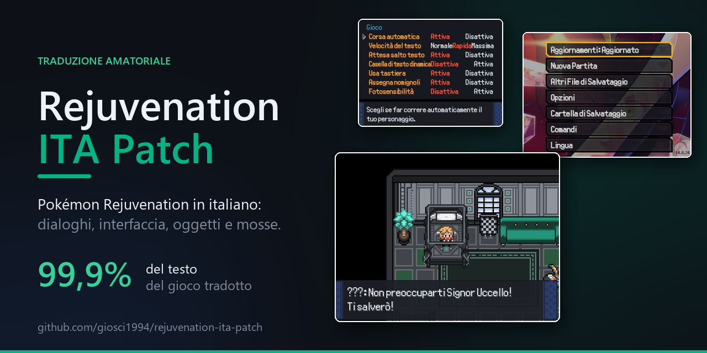
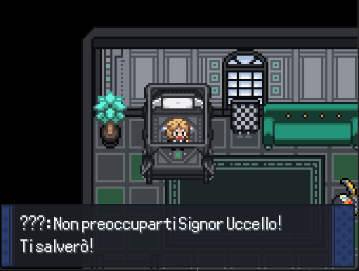
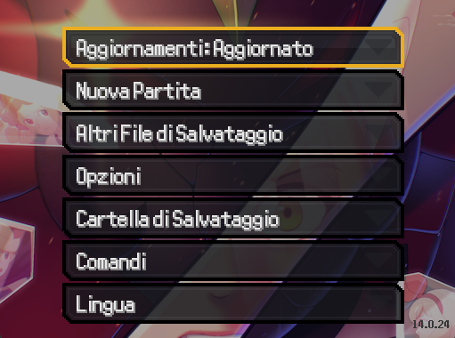
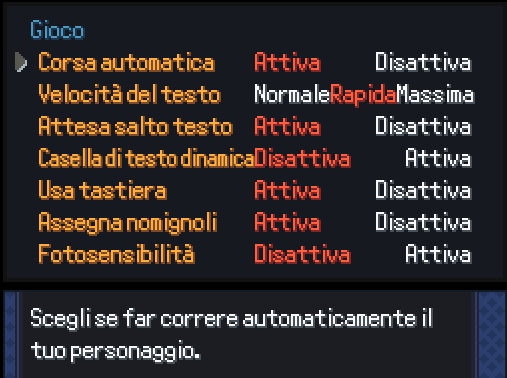
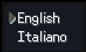

Traduzione amatoriale
Unofficial fan translation
Pokémon Rejuvenation
in italiano
Pokémon Rejuvenation
in Italian
Una cartella da copiare, una voce da selezionare, e la storia si legge. Dialoghi, interfaccia, mosse, strumenti e Pokédex: tutto tradotto, senza toccare un solo file del gioco.
Copy one folder, pick one menu entry, and the story reads. Dialogue, interface, moves, items and Pokédex — all translated, without changing a single file of the game.

Cosa trovi tradotto
What you'll find translated
I nomi dei Pokémon e i nomi propri di persone e luoghi restano invariati, come nelle edizioni italiane ufficiali.
Pokémon names and proper nouns are left untouched, as in the official Italian games.
Dialoghi e narrativa
Dialogue and story
L'intera trama, cutscene comprese. È la parte per cui esiste questo progetto.
The whole plot, cutscenes included. It's the reason this project exists.
Interfaccia
Interface
Menu, zaino, squadra, opzioni e messaggi di lotta.
Menus, bag, party, options and battle messages.
Terminologia ufficiale
Official terminology
Mosse, strumenti, abilità, tipi e nature con i nomi delle edizioni italiane: Lanciafiamme, Geloraggio, Mangiasogni.
Moves, items, abilities, types and natures use the names from the licensed Italian games.
Pokédex e missioni
Pokédex and quests
Voci del Pokédex, descrizioni degli strumenti e testi delle missioni.
Pokédex entries, item descriptions and quest text.
Si adatta a chi sei
It adapts to you
All'inizio scegli fra uomo, donna e non binario: oltre mille frasi si accordano alla tua scelta invece di restare al maschile.
Italian inflects for gender, and English has one line for all three starting options. Over a thousand lines now agree with what you picked.
Non può rompere niente
It can't break anything
Nessun file originale viene modificato, i salvataggi non si toccano e una frase non tradotta ricade sull'inglese.
No original file is modified, saves are never touched, and any untranslated line falls back to English.
Schermate
Screenshots
Catture dal gioco con la patch installata.
Captured in game with the patch installed.




Installazione
Install
Ti serve una copia di Pokémon Rejuvenation già installata. Non la trovi qui e non viene distribuita: scaricala dal sito del suo team di sviluppo.
You need your own copy of Pokémon Rejuvenation. It is not hosted or distributed here — get it from its development team's own site.
🪟 Windows
- Scarica e estrai lo zip (non aprirlo soltanto)
- Tasto destro su
installa.ps1→ Esegui con PowerShell - L'installer cerca il gioco da solo; se non lo trova, trascinaci dentro la cartella
- Download and extract the zip (don't just open it)
- Right-click
installa.ps1→ Run with PowerShell - It finds the game on its own; if it can't, drag the folder into the window
📱 Android · 🍏 iOS · 🐧 Linux · 🍎 macOS
- Estrai lo zip
- Copia la cartella
patchdentro la cartella del gioco, quella che contieneDataeGraphics - Se esiste già una cartella
patch, uniscila invece di sostituirla
- Extract the zip
- Copy the
patchfolder into the game folder — the one holdingDataandGraphics - If a
patchfolder already exists, merge instead of replacing it
▶️ Poi, in tutti i casi
▶️ Then, on every platform
- Avvia il gioco
- Dal menu principale scegli Language → Italiano, in fondo sotto Controls
- La scelta viene ricordata: non devi rifarla a ogni avvio
- Launch the game
- In the main menu pick Language → Italiano, at the bottom under Controls
- The choice is remembered, so you only do this once
Data, Graphics e
Save Data insieme.
Guida completa, con JoiPlay, Kirin, Empo e RPG Player: INSTALLAZIONE.md
Data, Graphics and Save Data together.
Full guide covering JoiPlay, Kirin, Empo and RPG Player (written in Italian): INSTALLAZIONE.md
installa.ps1 -Rimuovi. Nessun file originale del gioco
viene mai modificato, quindi non c'è nulla da ripristinare.
installa.ps1 -Rimuovi. No original game file is ever modified, so
there is nothing to restore.
Hai trovato una frase sbagliata?
Found a line that reads wrong?
Su 135.000 righe qualche scivolone c'è di sicuro, e chi gioca lo nota molto prima di chi ha costruito la patch. Segnalarlo è la cosa più utile che puoi fare: le correzioni più importanti pubblicate finora sono arrivate così.
Across 135,000 lines there are bound to be slips, and players spot them long before whoever built the patch does. Reporting one is the most useful thing you can do — the most important fixes released so far came in exactly that way.
Segnala una traduzione Report a translation